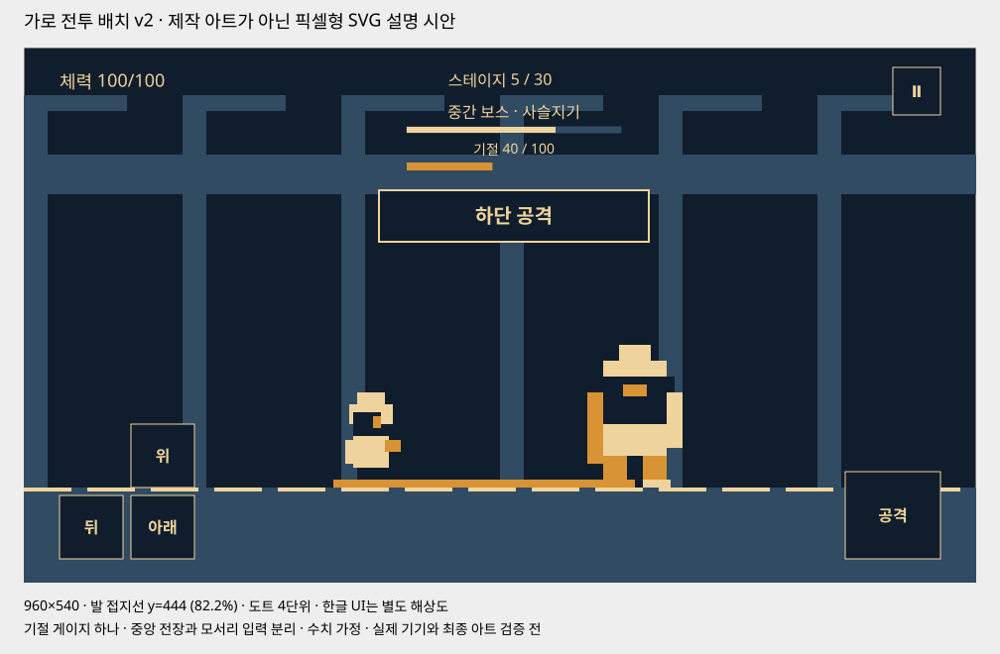
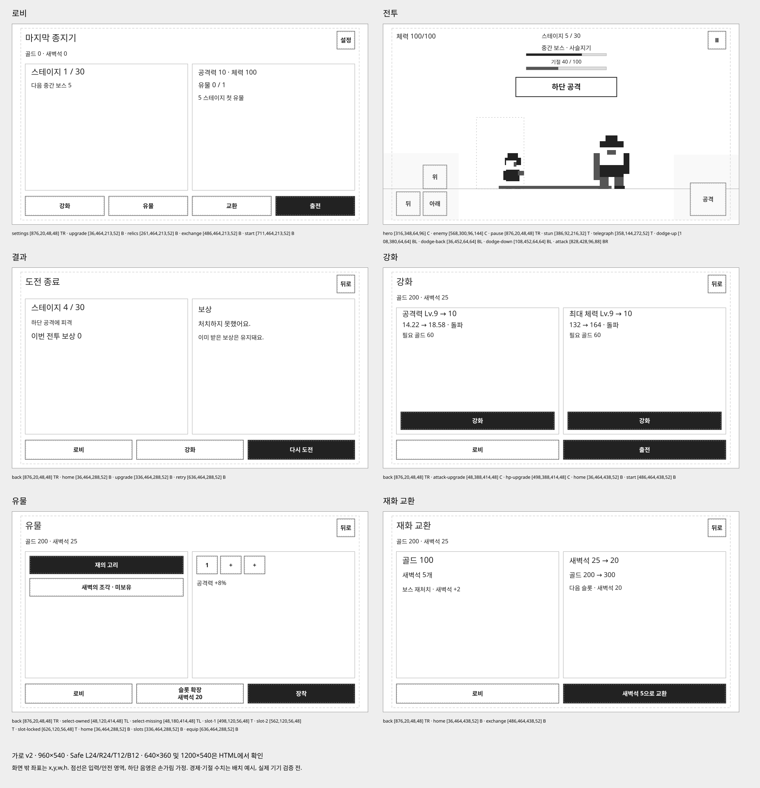

unity-project-foundation
폴더 책임, Excel→검증→생성 데이터, 수동 에셋 카탈로그, 저장 프리팹, 세션/Presenter/View, 비동기 보상과 저장, 필요한 규모의 자료구조를 정의했다.
스킬 원본 보기GAME DESIGN v2 / 2026.10.21
방향을 읽고, 연속해서 피하고,
종을 울려 적의 자세를 무너뜨린다.
이 페이지는 기획과 배치 시안이다. Unity 게임 구현·실기기 조작 검증은 아직 진행하지 않았다.

가로 전투 배치 시안 · 지면은 화면 높이 약 82%. 새 도트 형태를 SVG로 그린 배치 설명이며 실제 게임 캡처나 최종 스프라이트가 아니다.
| 항목 | v1 | v2 기준 |
|---|---|---|
| 화면 | 세로형 | 가로형, 지면을 화면 높이 약 82%로 낮춤 |
| 회피 | 한 버튼·700ms 재사용 | 위/아래/뒤 3방향, 입력 시작 간 최소 260ms |
| 숙련 보상 | 완벽회피의 울림 1회 충전 | 일반·완벽 회피로 기절 누적 → 행동불능 → 공격 기회 |
| 육성 | 영구 전투력 성장 없음 | 골드로 능력치 성장, Lv.10·20·30 돌파 |
| 진행 | 12전 반복 런 | 30스테이지 캠페인, 5·15·25 중간 보스 / 10·20·30 보스 |
| 전리품 | 외형 수집 | 보스 처치 유물, 장착 조합, 새벽석으로 슬롯·골드 교환 |
원작은 커뮤니티 문서에서 위·아래·뒤 회피를, 플레이 리뷰에서 타이밍에 따른 반격 게이지 보너스·5/10단위 보스·성장·유물을 확인했다. 원작의 정확한 회피 재사용 시간과 10레벨 배율은 확인하지 못했다. 기존 0.7초는 원작을 측정한 값이 아니라 v1 제안이었다. 아래 수치도 신작의 검증 전 초기값이다. 확인한 사실과 한계
주인공과 적은 중앙에 두고 발이 닿는 선을 낮춘다. 왼쪽 엄지는 위·뒤·아래 회피, 오른쪽 엄지는 공격을 담당한다. HUD는 상단에 두며 기절 게이지는 적 HP 아래 하나만 표시한다. 기절 중에는 같은 위치가 남은 시간으로 바뀐다.

화면 안의 문구는 행동·필요 상태·가격·회복 안내로 제한한다. “전략적인 성장 경험” 같은 기획 설명은 게임에 넣지 않는다. 구체 hit area·anchor·가림 위험은 UI 담당 명세를 따른다.
| 규칙 | 초기값 | 플레이 의미 |
|---|---|---|
| 방향 | 위=뛰기 / 아래=숙이기 / 뒤=물러나기 | 자유 이동이 아닌 짧은 회피 후 제자리 복귀. 방향 오류는 타이밍이 맞아도 피격 |
| 일반 회피 | 올바른 방향으로 타격 직전 160ms 안에 입력 (마지막 60ms는 완벽회피) | 무피해, 기절 누적 +20 |
| 완벽 회피 | 타격 직전 60ms 안의 올바른 방향 입력 | 무피해, 기절 누적 +40 |
| 다음 회피 | 유효 160ms + 회복 100ms = 260ms | 새 입력이 필요. 길게 누르기·회복 중 연타로 판정창 연장 불가 |
| 연속타 간격 | 최소 450ms, 지연 패턴은 더 길게 | 입력 가능 시각과 새 방향을 볼 시간을 함께 확보 |
| 기절 | 100 누적에서 발동 | 일반 1.5초 / 중간 보스 1.2초 / 보스 1초. 발동 즉시 남은 타격 취소, 초과 게이지 폐기 |
| 공격 | 기본 피해 10, 간격 500ms | 준비 100ms, 회피가 공격을 취소할 수 있음. 취소한 공격 간격은 환급하지 않음. 기절 중 피해 ×1.4 |
450ms 간격의 연속타에서 첫 회피를 타격 직전0ms, 다음 회피를160ms 앞서 입력하는 경우 시작 간격은290ms다. 최소재입력260ms보다30ms 여유가 남는다. 같은타이밍으로계속피하면450ms 간격이다. 실제기기입력지연과30fps에서이여유가충분한지검증한다.
기절 중과 종료 후 2초는 기절이 누적되지 않는다. 공격으로 기절 시간을 연장하지 않으며 종료 후 온전한 예고부터 다시 시작한다. 피격하면 누적 20을 잃되 전량 초기화하지 않는다. 일반회피만으로도 누적 가능하다.
기절 게이지는 해당 적 전투만의 상태다. 이전의 울림 1회·마지막 타격 뒤 800ms 강화창은 폐기한다. 성장·유물이 회피 방향을 대신 맞히거나 판정창·재사용 시간을 바꾸지는 않는다. 일시정지는 같은 전투 시계를 멈추고, 중단 복귀 시 안전한 예고부터 다시 시작한다.
공격력과 최대 체력을 각각 골드로 올린다. 두 능력치는 별도 Lv.1~30이며, 해당 능력치 Lv.10·20·30에 큰 성장이 적용된다. 공속·회피 판정창·회피 재사용 시간은 강화하지 않는다.
| 레벨 | 공격력 | 최대 체력 | 성장 의미 |
|---|---|---|---|
| 1 | 10.00 | 100 | 기본 |
| 9 | 14.22 | 132 | 일반 성장 |
| 10 | 18.58 | 164 | 돌파 |
| 19 | 27.61 | 223 | 일반 성장 |
| 20 | 36.06 | 277 | 돌파 |
| 29 | 53.59 | 377 | 일반 성장 |
| 30 | 70.00 | 469 | 돌파 |
공격 A(L)=10×1.045^(L−1)×1.25^floor(L/10). HP H(L)=round(100×1.035^(L−1)×1.20^floor(L/10)). L은 각 능력치의 개별 레벨. 피해는 내부 소수값, HP는 반올림.
능력치별 2~9 도달은 회당20골드, 10은60골드. 11~19는40, 20은120. 21~29는60, 30은180. 한 능력치 1→30은1,420골드, 둘 다30은2,840골드. 자동 일괄 강화 없이 선택한 능력치와 전후 수치·비용을 표시한다.
모든 스테이지 클리어를 저장한다. 패배하면 현재 스테이지부터 재도전하고, 이미 받은 골드·새벽석·유물·성장은 보존한다. 플레이어와 적 모두 새 전투의 최대 체력에서 시작한다. 5단위는 정비와 유물 확인 기회이며 이전 구간을 다시 깨야 하는 입장 조건이 아니다. 완료 스테이지는 선택해서 재플레이할 수 있다.
| 구간 | 적 체력·피해 기준 | 성장·플레이 가정 | 시간 해석 |
|---|---|---|---|
| 5 · 중간 보스 | HP 486 / 피해 18 | 공격·체력 Lv.5, 유물 없음 가정 | 수치 가설; 체감 난이도·수급 속도 미검증 |
| 10 · 보스 | HP 1110 / 피해 26 | 공격·체력 Lv.10, 유물 없음 가정 | 수치 가설; 체감 난이도·수급 속도 미검증 |
| 15 · 중간 보스 | HP 913 / 피해 30 | 공격·체력 Lv.15, 유물 없음 가정 | 수치 가설; 체감 난이도·수급 속도 미검증 |
| 20 · 보스 | HP 2084 / 피해 44 | 공격·체력 Lv.20, 유물 없음 가정 | 수치 가설; 체감 난이도·수급 속도 미검증 |
| 25 · 중간 보스 | HP 1713 / 피해 50 | 공격·체력 Lv.25, 유물 없음 가정 | 수치 가설; 체감 난이도·수급 속도 미검증 |
| 30 · 보스 | HP 3913 / 피해 74 | 공격·체력 Lv.30, 유물 없음 가정 | 수치 가설; 체감 난이도·수급 속도 미검증 |
공격·체력 레벨=스테이지, 유물 없음, 올바른 회피율92%·전체 공격 중 완벽회피35%·공격 활용률90%를 가정한 유한 전투 근사: 30단계 순수 전투420.4초 + 전환54초 = 474.4초(약7분54초). 기준·초심자 가정에서 5단계 묶음은 전투·전환 약70~110초다. 성장 메뉴·파밍·실패·서사는 제외했으므로 실제 캠페인 완료 시간이나 플레이 테스트 결과로 해석하지 않는다. v1의 216초·12전 계산은 새 캠페인에 적용하지 않는다. 적 종류와 스테이지 수는 다르며 30개의 독립 캐릭터를 제작하지 않는다.
5·10·15·20·25·30에서 각기 다른 유물 1종을 매 처치 확정 드랍한다. 처음 얻으면 영구 보유하고 같은 유물을 다시 얻으면 구역별 20/40/60골드로 바뀐다. 유물 자체의 추가 강화 트리는 초기 범위에서 제외한다.
| 유물 | 효과 초안 | 제약 |
|---|---|---|
| 5 · 재의 고리 | 공격력 +8% | 합산 공격 증가 상한20% |
| 10 · 새벽의 조각 | 최대HP +12% | 합산 HP 증가 상한25% |
| 15 · 사슬 종추 | 일반 회피 누적 +25%: 20→25 | 일반 누적 증가 상한25%, 완벽에는 적용하지 않음 |
| 20 · 맑은 종추 | 완벽 회피 누적 +25%: 40→50 | 완벽 누적 증가 상한25%, 일반과 이중 지급하지 않음 |
| 25 · 종망치 파편 | 기절 적 피해 배율 1.4→1.5 | 배율 상한1.5 |
| 30 · 새벽의 장막 | 받는 피해 8% 감소 | 총 감소 상한15%, 최종 피해 최소1 |
보유함은 6종 모두 보관한다. 장착만 기본1칸, 최대3칸이다. 미장착 유물이 사라지거나 슬롯 부족으로 보상이 버려지지 않는다. 같은 ID 중복 장착 불가, 정비 화면에서 무료 교체한다.
장착2칸은 새벽석20(10스테이지 후), 3칸은40(20스테이지 후). 새벽석5를 골드100으로 교환할 수 있다. 슬롯 자동 개방이 아니라 직접 구매한다.
| 획득·사용 | 기준 | 조건 |
|---|---|---|
| 일반전 골드 | 1구역40 / 2구역70 / 3구역100 | 최초·반복 동일 |
| 중간/보스 골드 | 일반 보상의 ×3 / ×5 | 실패한 전투 자체는 무보상 |
| 새벽석 | 각 중간/보스 첫 처치15, 반복2 | 첫15는 반복2+최초13 합계, 17로 지급하지 않음 |
| 중복 유물 | 구역별20 / 40 / 60골드 | 새 유물과 중복 골드는 동시 지급하지 않음 |
| 슬롯 | 1→2:20 / 2→3:40 새벽석 | 10 / 20스테이지 클리어 후 구매 가능 |
| 골드 교환 | 새벽석5 → 골드100 | 고정 교환, 역교환·강제 예약 없음 |
| 선택 광고 | 새벽석+2, 클리어 결과당1회·일3회 | 사용처가 없으면 숨김. 기본 보상·다음 전투는 광고와 무관 |
새벽석을 골드로 먼저 쓰면 슬롯 확장이 늦어질 수 있다. 교환 창에서 비용·교환 후 잔액·다음 슬롯 가격을 보여 준다. 예컨대5새벽석을 먼저 교환했다면20스테이지 시점에5가 모자라며, 완료한 보스3회 재처치(+6)로 무료 보완할 수 있다. 장식 조각은 폐기하고 두 통화만 유지한다. 공격·체력이 모두30이면 골드 교환을 숨긴다. 모든 슬롯도 열려 새벽석 사용처까지 소진되면 재화 광고를 숨긴다. 잔액은 보존한다.
새벽석은 다이아에 해당하는 가칭 인게임 재화다. 초기에는 현금 직판을 보류한다. 향후 판매하면 성장 속도와 장착 성능에 영향을 주는 상품이므로 가격·무과금 진행·환불·기록 비교를 다시 검토해야 한다.
“밤이 끝나지 않았다.”
“새벽을 깨우던 종도
잠들었다.”
“남은 불씨 하나.
종을 깨워라.”
유물은 이전 종지기들이 남긴 도구다. 10·20·30 보스 뒤 종을 깨우고 해당 구역에 빛이 돌아온다. 긴 대사 대신 종소리·배경 변화·짧은 한 줄로 진행을 보여준다. 장비·체력 성장은 다음 구역을 버티는 준비이며 방향과 타이밍을 배우는 역할을 대신하지 않는다.
9초 오프닝은 최초 1회·건너뛰기 가능. 30스테이지 첫 완주 기록 확정 뒤 6초 엔딩, 이후 설정에서 무료 재생. 재도전 시 자동 서사 없음. 기존 배경·캐릭터를 재사용한다.
| 영역 | 첫 검증 | 30스테이지 후보 |
|---|---|---|
| 캐릭터·적 | 종지기1, 일반2원형, 중간1변형, 보스1원형 | 일반4원형·중간3변형·보스3원형; 30개의 독립 캐릭터 아님 |
| 동작 | 위/아래/뒤 회피와 기절 자세 | 플레이어14 + 일반4×19 + 보스3×20 = 150프레임 상한 후보 |
| 효과·배경 | 회피·기절·공격 효과, 가로 배경1 | VFX21프레임 후보, 공통 가로 배경+3구역 변형 |
| 화면 | 전투·결과·강화·유물·교환 | 가로 로비·설정·상점·스테이지 선택·오류 상태 |
| 유물 | 5/10드랍2종·슬롯최대2 | 24×24px 아이콘6개·슬롯최대3 |
| 데이터·저장 | 10스테이지·두능력치·두통화 | 30스테이지·돌파·장착·거래·중복 보상 검증 |
첫10스테이지 시제품은 임시 자산2~4인일+개발·검증8~14인일, 합계10~18인일의 계획 범위다. 전체후보는 자산34~63+구현·검증34~60인일, 여유20% 포함약82~148인일이다. 1인일은집중6시간이며 실제견적이나 납기가 아니다. 원스토어SDK·정책·심사·모집대기는별도. v1의85프레임·48~85인일은폐기하고, 첫10개검증후 실제사용자산에맞춰 다시산정한다.
주인공 16×24px 원본을 출발점으로, 일반24~32px·보스48~64px와 4색 기반 팔레트를 유지한다. 방향별 회피·기절 자세를 식별할 수 있어야 한다. UI 한글은 도트 장식보다 가독성을 우선한다.
동일한 적·피해·예고로 1버튼과 3방향을 비교한다. 순서를 바꿔 시험하고 재도전 의욕·방향 오류·회복 중 입력 실패를 기록한다.
5중간보스·10보스, 기절, Lv.10 성장, 유물과 슬롯·골드 교환을 연결한다. 무료 진행 비용과 반복 파밍 시간을 관찰한다.
방향 회피가 이해되고 성장 없이도 실패 이유를 납득한 뒤 확장한다. 20·30 돌파와 모든 유물 조합, 원스토어 결제·광고·복구를 검증한다.
8명 관찰에서 1버튼/3방향 순서를 교차한다. 3명 이상이3회차에도 방향·피격 이유를 오해하면 예고·입력부터 수정한다. 첫10스테이지에서 무료 진행,기절 이해,공격/체력 선택,Lv.10전후,유물2종 조합을 관찰한다. 동일한 성장·유물 조건으로 조작을 비교하고, 파밍을 재미 검증 대신 쓰지 않는다. 이 숫자는 내부 운영 기준이며 업계 평균이나 달성 결과가 아니다.
시장 방향은 직접 조작과 성장을 함께 원하는 이용자로 넓어진다. 동시에 방향 입력 피로, 반복 파밍, 유물 조합 밸런스, 더 큰 제작비가 새 위험이다. 글로벌 장르 트렌드만으로 원스토어 수요나 매출을 확정하지 않는다. 시장 자료
원스토어 판매자·등급·SDK·결제/복원·광고·개인정보·검수 준비는 유지한다. 베타게임존의 무료 조건·결제 테스트 제한은 별도 확인한다. 기존 검증 링크는 v1 시장 근거에 보존했다.
성장·유물 추가가 매출 상승을 입증하지는 않는다. 기존 입력을 유지한 산술 참고이며 v2의 예측값이 아니다. 새벽석 현금 판매 수익은 0으로 계산한다.
| 항목 | 기획 기준 | 플레이에 미치는 영향 |
|---|---|---|
| 무료 플레이 | 모든 MVP 전투·재도전 | 스태미나·유료 부활·강제 광고 없음 |
| 선택 광고 | 클리어 결과에서 새벽석 +2 / 결과당1회·일3회 | 기본 보상과 즉시 재도전 유지. 성장 속도에 영향을 주므로 무광고 진행을 별도 검증 |
| 외형 A | 3,300원 가정 / 영구 외형 1종 | 상품별 1회. 능력치·판정·보스 해금 변화 없음 |
| 후원 꾸러미 B | 5,500원 가정 / 별도 외형 + 감사 배지 | A와 중복 없음. 구독 아님. 구매 확인·복원 제공 |
홍보 문구는 “강제 광고 없음 · 보상 광고는 선택”. 원래 없는 강제광고를 제거하는 상품은 팔지 않는다. 두 상품을 모두 산 이용자의 구매 상한은 현재 8,800원이다. 같은 이용자가 매달 반복 지출한다고 계산하지 않는다.
두 능력치 성장과 유물 슬롯은 무료 전투 보상으로 진행할 수 있다. 광고는 새벽석을 추가 지급해 성장 속도에 영향을 준다. 성장·슬롯의 유한한 소비처가 소진된 이용자에게는 재화 광고를 숨기므로 이후 노출을 계속 가정하지 않는다.
| 첫 30일 · 전부 가정 | 낮음 | 기준 | 높음 |
|---|---|---|---|
| 획득 설치 / MAU | 625 / 500 | 2,500 / 2,000 | 10,000 / 8,000 |
| 1인 활동일 / 평균 DAU | 3일 / 50 | 6일 / 400 | 9일 / 2,400 |
| 결제율 / ARPPU | 0.5% / 3,300원 | 1.5% / 4,400원 | 3% / 5,500원 |
| 결제액 기준 환불률 | 3% | 2% | 1% |
| 실노출 / 활성 이용자일 | 0.2회 | 0.5회 | 1회 |
| 퍼블리셔 eCPM · 원화 | 4,000원 | 6,000원 | 8,000원 |
| IAP 총결제액 · VAT 포함 | 8,250원 | 132,000원 | 1,320,000원 |
| VAT·환불·20% 수수료 반영 IAP | 5,820원 | 94,080원 | 950,400원 |
| 광고 수익 | 1,200원 | 36,000원 | 576,000원 |
| 공제 반영 수익 합계 | 7,020원 | 130,080원 | 1,526,400원 |
| 10% 감면 적용 시 합계 | 7,748원 | 141,840원 | 1,645,200원 |
| 운영 현금비 가정 | 50,000원 | 100,000원 | 200,000원 |
| 20% 기준 운영 잔액 · UA 0 | −42,980원 | 30,080원 | 1,326,400원 |
이 표는 예측이나 보장 수익이 아니다. 확보된 유입은 아직 0이며, 높은 시나리오도 성공 확률을 뜻하지 않는다. 노동비·초기 아트비·장비비·소득세는 잔액에서 제외했다. 월 노동 80시간×2만원을 추가하면 높은 시나리오도 약 27만원 적자다.
첫 달 기존 구매자 0명 가정. 계산기는 환불률 2% 고정이라 환불률이 다른 표의 낮음·높음 시나리오를 완전히 재현하지 않는다. DAU=MAU×활동일÷30. IAP=MAU×결제율×ARPPU×0.98÷1.1×(1−수수료). 광고=DAU×30×실노출×eCPM÷1000.
광고 eCPM은 광고망 공제 후·VAT 제외 원화 가정이다. 광고에는 IAP 수수료를 다시 적용하지 않는다. 실제 광고 노출을 쓰므로 fill rate도 중복으로 곱하지 않는다. 원스토어 기본 20%, 조건부 감면은 월 합산 거래액 5,000 USD 이하 등 공식 조건과 계정 적용을 확인해야 한다. 쿠폰 등의 할인 정산은 위 단순 계산에서 제외했다. 공식 수수료 안내
성장·수집 완료 뒤 광고 참여가 줄어드는 민감도도 확인한다. 기준 가정에서 광고 수익만 0으로 낮추면 합계 94,080원, 운영 현금비 차감 후 −5,920원이다. 노동비·UA비는 여전히 제외다. 성장·수집 완료 전·후의 활동일과 광고 실노출을 분리해 측정해야 한다.
폴더 책임, Excel→검증→생성 데이터, 수동 에셋 카탈로그, 저장 프리팹, 세션/Presenter/View, 비동기 보상과 저장, 필요한 규모의 자료구조를 정의했다.
스킬 원본 보기화면 목표→와이어프레임→검토→배치→렌더 확인. 필요한 행동·상태·서사·구매 조건만 남기고 개발 설명은 게임 화면에서 제거한다.
스킬 원본 보기GameData 원본 → Editor 전체 검증 → Generated SO/JSON
수동 Prefab/Sprite/Audio Catalog ────────────┘
↓
GameSession
↙ ↘
CombatState / Pattern Save / Platform Adapter
↕
Presenter → 저장된 UI Prefab
이번 게임은 한 번에 적 1명이다. 패턴은 배열, ID 조회는 Dictionary, 보상 중복은 처리 ID로 관리한다. 공간 해시·ECS·DI 컨테이너·PvP 서버를 선행 도입하지 않는다. 공격·회피 시간은 전투 시계 한 곳에서 판단하고 UI는 그 상태를 표시한다.
두 스킬은 C:\Users\JW\.codex\skills에 설치했다. 공식 형식 검증 2개 통과, 수동 프리팹 유지·Unity 미실행 조건의 독립 사용 시나리오 검토를 반영했다. 스킬 검토 · Permission-to-win 근거 · SimpleGame 근거
v2 데이터 추가: Stage의 종류·체크포인트·드랍, Dodge의 방향·판정 시각, Stagger의 상태·면역, StatUpgrade의 레벨·돌파·비용, Relic의 효과·중복·장착 조건, Currency의 획득·교환을 원본 데이터로 관리한다. 저장에는 성장 레벨·유물 보유/장착·슬롯 수·최초 보상 마스크·처리 거래 ID를 분리한다. 전투 중 성장·장착은 바꾸지 않고 출발 시 스냅샷을 만든다.
| 담당 | 이번 검토 | 문서 |
|---|---|---|
| 기획 | 방향 회피·진행·체크포인트·스토리·시험 범위 | 기획 v2 |
| 전투 | 회피 시계·기절·성장·30전 수치·유물·공수 | 전투 v2 |
| UI | 가로·지면·손 가림·3방향·성장·유물·교환 | UI v2 |
| 시장·경제 | 무료 획득·강화·슬롯·교환·광고·수익 한계 | 경제 v2 |
기획·전투·UI·경제 4개 담당이 수정 기준에 동의했고 필수 수정 사항을 반영했다. 기획 검토는 재미·상업성·실기기 검증 완료를 뜻하지 않는다. 현재 결정 기록 · 이전 기획 v1
문서 렌더 검사 · 경제·수치·파일 검사. 실행 시점과 버전을 확인할 수 있다. 실제 게임의 입력 지연이나 클리어 시간을 측정한 자료는 아니다.